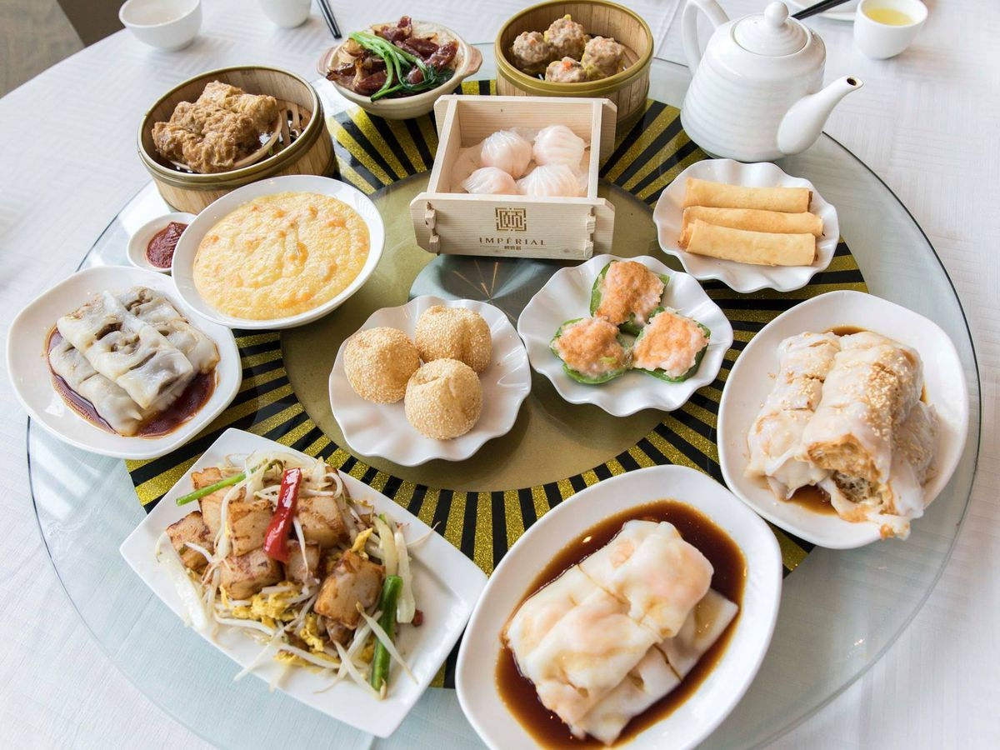

Living in the City
Living in a big city like Toronto is very fast-paced. I work during
the day, have online classes at night, and polish my programming
skills with the remainder of the day. Plus dealing with appointments,
traffic, and running errands. Perhaps growing up in this environment
has made it a norm to have a jam-packed schedule.
Although, I do find time to enjoy life with my partner, family and
friends when I get the chance. You can find me trying a new
restaurant, playing badminton, or just driving through the city for a
late night cruise.
Foodie Adventures

The picture above shows a spread of dim sum dishes, one of my
favourite weekend brunch.
Known as one of the most diverse and multicultural cities, Toronto
boasts some of the best foods around the world. From the Canadian
favourite poutine, to authetic Italian style pastas and pizzas, along
with Japanese sushi and ramen, to the Indian fiery curries and naan,
as well as Jamaican jerk chicken and patties.
Be it a pop-up, street food, or a new spot that opened; there is lots
to discover all over the city and a foodie's paradise.
Fun Activities

With summer around the corner, the Canadian National Exhibition(CNE)
is the place many Torontonians look forward to. There are also
numerous food festivals occuring on different city blocks on certain
weekends across the city.
The iconic CN Tower is a great way to view the city. Pair that with
watching a sports game in the Roger's Centre or dive into an immersive
water world inside Ripley's Aquarium.
Walk along the lively shopping areas with restaurant patios lining the
streets. Perhaps a stroll along the harbour. There is so much to do
and see in this city.